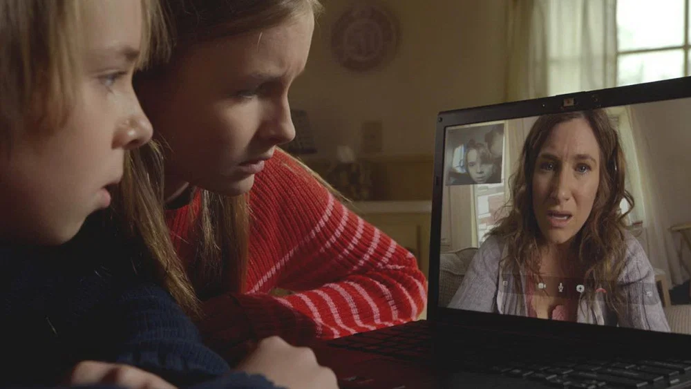
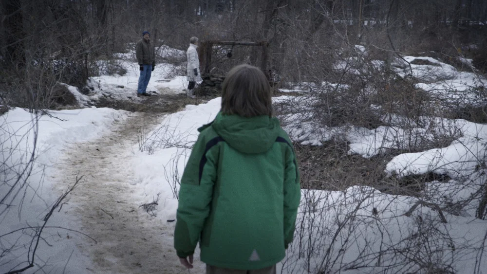
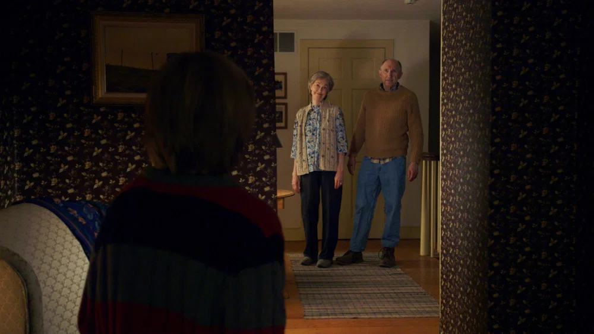

Avete presente quando andavate dai nonni da piccoli e c’era quella cosa, quella cosa che nessuno vi spiegava, tipo il nonno che si addormentava di colpo a metà frase con la bocca aperta, o la nonna che vi chiamava col nome di vostra cugina e quando la correggevate vi guardava come se foste voi quelli strani? Ecco. Immaginate di avere 13 anni, una telecamera in mano, e di passare una settimana intera in una fattoria isolata della Pennsylvania con due nonni che non avete mai visto in vita vostra.
Era il 2015 e M. Night Shyamalan era, tecnicamente, un uomo finito. Veniva da L’ultimo dominatore dell’aria e After Earth, due film che non solo erano andati male, ma erano diventati il bersaglio preferito di chiunque volesse fare una battuta sui registi bolliti. Il nome di Shyamalan nei trailer veniva nascosto. Allora cosa fa il nostro Night? Si accorda con la Blumhouse e gira un found footage piccolo piccolo, con due ragazzini e due anziani in una casa. Il ritorno alle origini. Il ritiro spirituale. E indovinate un po’? Gli viene benissimo.

Becca (Olivia DeJonge), aspirante documentarista, e il fratellino Tyler (Ed Oxenbould), aspirante rapper germofobo con un’autostima incrollabile e totalmente immotivata, vanno a trovare per la prima volta i nonni materni. La mamma (Kathryn Hahn) non li vede da quindici anni dopo una brutta litigata, e i figli vogliono riavvicinare la famiglia. Becca filma tutto per farne un documentario. Nana e Pop Pop sono amorevoli e gentilissimi. Poi la notte Nana gira per casa vomitando. E corre a quattro zampe. E graffia i muri nuda. E Pop Pop tiene nel capanno una montagna di pannoloni usati. “Sono vecchi”, dicono i ragazzi. “È normale. Sono cose da vecchi.”

Tutti parlano del colpo di scena, perché è Shyamalan e con Shyamalan si parla sempre del colpo di scena. Ma la cosa davvero furba di The Visit, però, è un’altra. Shyamalan non si inventa nessun mostro. Non c’è un demone, non c’è un fantasma, non c’è un alieno che ha paura dell’acqua. Prende la paura più rimossa e meno elegante che abbiamo, quella che non si dice a cena: il corpo che invecchia e perde il controllo. L’incontinenza. La demenza. Gli sbalzi d’umore. I comportamenti notturni senza senso. Il nonno che non ti riconosce più. La fa guardare attraverso gli occhi di due adolescenti che hanno l’ingenuità e l’iper-razionalità tipiche di chi crede che con una spiegazione si risolva tutto. Per buona parte della visione non sai se quello che stai vedendo è un pericolo o solo una fragilità che meriterebbe cura. Ti senti in colpa a ridere. Ti senti in colpa ad avere paura.

The Visit è anche una commedia. Tyler fa freestyle imbarazzanti, si autocensura sostituendo le parolacce con nomi di cantanti pop, e ha una paura dei germi che verrà ripagata nel modo più disgustoso possibile nel finale. Il found footage, tra l’altro, è usato con giudizio: la scusa del documentario di Becca giustifica inquadrature un po’ più composte del solito, e i due ragazzini si scambiano la telecamera in modo che non sembri il solito traballamento da mal di mare. Ci sono un paio di jump scare costruiti bene, che funzionano proprio perché per metà del tempo stai ridendo e abbassi la guardia.
Linea dello spoiler
Nana e Pop Pop non sono Nana e Pop Pop. Sono due pazienti fuggiti dall’istituto psichiatrico in cui lavoravano come volontari i veri nonni, che giacciono morti nello scantinato. Col senno di poi, il film te l’aveva detto in tutti i modi: i nonni che non vengono mai visti in faccia dalla mamma nelle videochiamate, il coprifuoco, le “visite” dall’ospedale. Il colpo di scena non è un trucchetto fine a se stesso: ribalta proprio il discorso sulla vecchiaia, perché ti accorgi che per tutto il film hai giustificato l’ingiustificabile pensando “sono solo vecchi”. Shyamalan, dopo tanti anni, si è ricordato come si fa.

The Visit è uno Shyamalan minore, piccolo, sporco e cattivo: proprio per questo è uno dei suoi migliori.
In conclusione, è uno Shyamalan minore, piccolo, sporco e cattivo, ed è proprio per questo che è uno degli Shyamalan migliori. È il film con cui il nostro si è rimesso in carreggiata. Andate a trovare i vostri nonni, mi raccomando. Ma di giorno.

— P. M.